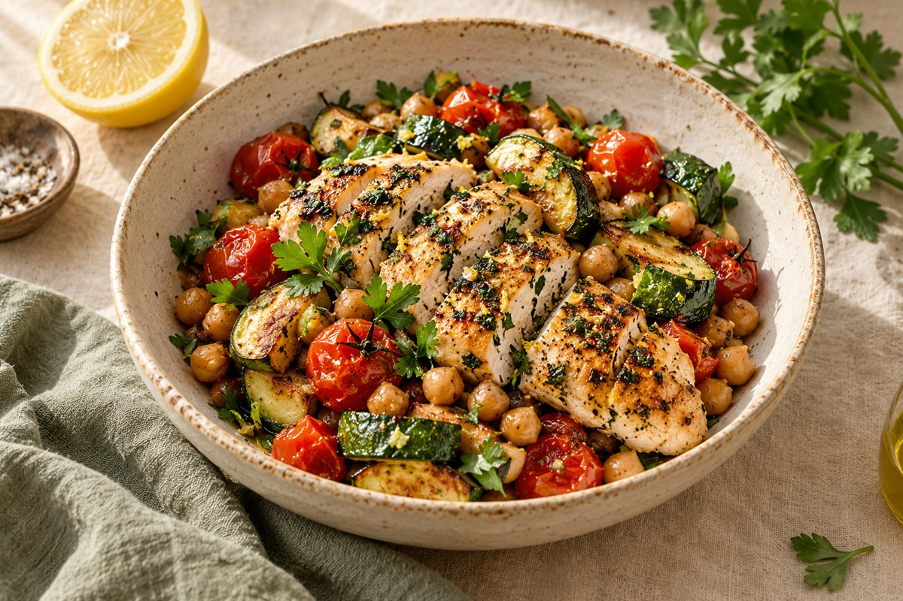

DishNest pour Android et tablettes Fire
Vos recettes et vos menus, au même endroit
Un carnet de recettes, un planning de repas et une liste de courses pour Android et tablettes Fire. Version de développement.
Découvrir DishNest
Poulet au citron et aux herbes · Exemple de recette
Explorez les fonctionnalités
- Un carnet de recettes à votre goût
- Préparez vos menus de la semaine
- Du menu à la liste de courses
- Suivez votre recette à votre rythme
- Cuisinez avec ce que vous avez déjà
- DishNest sur les tablettes Fire
- Les offres DishNest
Puis-je consulter mes recettes hors connexion ?
Oui. Le carnet de recettes, les menus, le garde-manger et la liste de courses sont enregistrés sur votre appareil. L’importation depuis un site nécessite Internet. Les commandes vocales dépendent du service de reconnaissance installé.